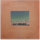

<!--HIDE IMAGE BLOCK OF IMAGES
  <div id="image-block">
            <a href="#carousel"></a>
            <a href="#carousel"></a>
            <a href="#carousel"></a>
    </div> -->

<!-- HIDE TABLE w Second Album Contents
  <p>
    <table class="centered">
        <caption class="album-text">
          The Universe Smiles Upon You
        </caption>
        <tr>
          <th scope="col">Track. No.</th>
          <th scope="col">Track Name</th>
          <th scope="col">Length.</th>
        </tr>

        <tr>
          <td>1.</td>
          <td>Mr. White/td>
          <td>4:58</td>
        </tr>
        <tr>
          <td>2.</td>
          <td>Two Fish and an Elephant</td>
          <td>3:33</td>
        </tr>
        <tr>
          <td>3.</td>
          <td>Dern Kala</td>
          <td>3:39</td>
        </tr>
        <tr>
          <td>4.</td>
          <td>Little Joe & Mary</td>
          <td>5:08</td>
        </tr>
        <tr>
          <td>5.</td>
          <td>White Gloves</td>
          <td>3:38</td>
        </tr>
        <tr>
          <td>6.</td>
          <td>People Everywhere (Still Alive)</td>
          <td>2:39</td>
        </tr>
        <tr>
          <td>7.</td>
          <td>The Man Who Took My Sunglasses</td>
          <td>2:13</td>
        </tr>
        <td>8.</td>
        <td>August Twelve</td>
        <td>2:13</td>
      </tr>
      <tr>
        <td>9.</td>
        <td>Balls and Pins</td>
        <td>3:28</td>
      </tr>
      <tr>
        <td>10.</td>
        <td>Zionsville</td>
        <td>4:11</td>
      </tr>
    </table>

  </p>
</div> -->
